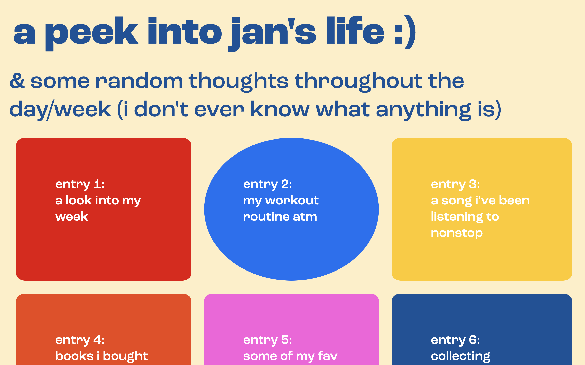
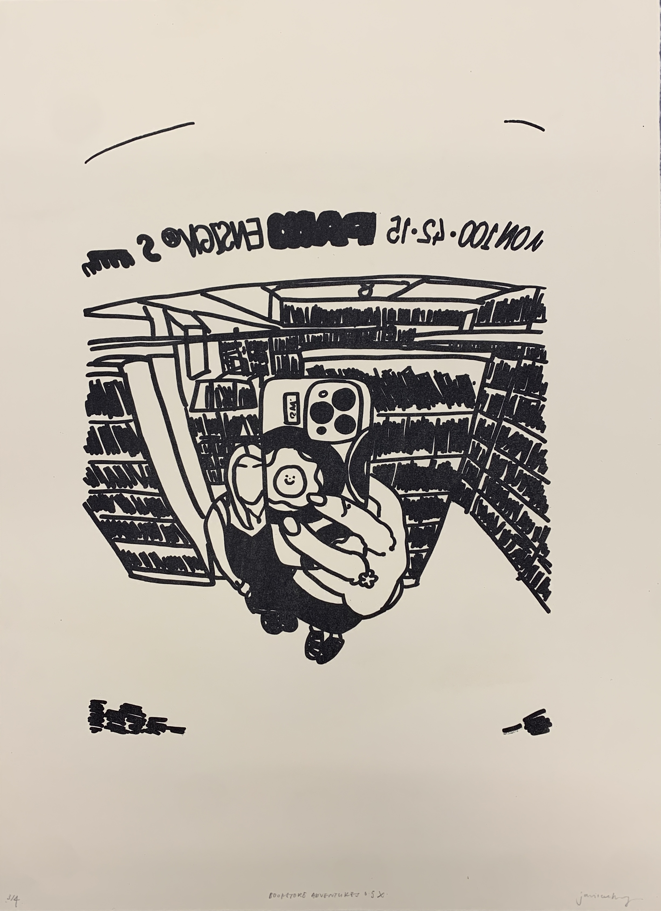

wheels on the bus (project 3. intx w/ the city: New York City in Data)
Data is all around us and can help us understand new aspects about our environment. Using the New York City open data, a set of data on bus breakdown and delays is selected and visualized using p5.js.
This project considers the relationship between the form, the story, and the data itself. How does the data’s container help encourage an understanding of the data not possible without it?

core 2: interaction - lab assignments (spring 2023)
the lab is designed around a series of small workshops that teach beginning and intermediate interaction design through a hands-on engagement with HTML, CSS and Javascript.

^process: letterpress & relief
bookmarks for leaves
for artist's books: letterpress with martin mazorra

^process: letterpress & relief
bookmarks for leaves
for artist's books: letterpress with martin mazorra
People Watching People: Chinatown, Manhattan, NY (project 2. intx w/ data: Elastic Collection)
Any time you see a multiplicity of an object, you begin to notice similarities and contexts in a new way. Seeing multiple of an object allows for this kind of in depth research that observing one object does not. The way the object is documented and organized helps direct the viewer on how the object is meant to be experienced.
This project investigates the themes of privacy through people-watching. The aim of this project is to gather and organize a collection of data, understand metadata, to tell a story through content curation and order, to experiment with interactions with a collection, and to develop a working relationship of JavaScript objects and data collections.
* all data is pulled from a JSON file and uses JavaScript & is responsive and function on a mobile screen


^process: photo etching
j
for photo etching with paul marcus


^process: letterpress
event poster: UFC 287
for artist's books: letterpress with martin mazorra

^process: letterpress
event poster: UFC 287
for artist's books: letterpress with martin mazorra

^process: letterpress
event poster: UFC 287
for artist's books: letterpress with martin mazorra


zine: HOME
a 48-page zine on Chinese and Thai wedding traditions, as someone with Chinese and Thai heritage, this developed from my interest in these cultures' wedding traditions and cultures.


^process: photo etching
prospect park bench

^process: photo etching
prospect park bench

^process: photo etching
liia
for photo etching with paul marcus
^process: letterpress
dictionary definition: cabin!
for artist's books: letterpress with martin mazorra
Stories as Networks (project 1. intx w/ typography)
The reader will not only be able to read the story “On Beginnings” from Madness, Rack and Honey by Mary Ruefle, but also experience my interpretation of the story.
The aim of this project is to build a multi-page website that experiments with navigation to convey meaning, and to interpret a story through expressive typography online.

^process: photo etching
jessica (split personality)
for photo etching with paul marcus
^process: photo etching
jessica (split personality)
for photo etching with paul marcus

^process: letterpress
class/group print, introduction to letterpress
for artist's books: letterpress with martin mazorra


core 1: interaction (fall 2022)
harmonic collection: each week, an entry is designed and coded to this collection that explores my daily life. at the end of the semester, a website that houses 10 programmed entries is delivered.

^process: silkscreen on white tshirt
rubber duckies
for intro to printmaking with kelli glancey
^process: silkscreen on tote bag from muji
rubber duckies
for intro to printmaking with kelli glancey
^process: silkscreen
rubber duckies
for intro to printmaking with kelli glancey
TYPOGRAPHIC POSTER
a typographic poster promoting the “opening” of TamJai SamGor MiXian, a renowned noodle shop from Hong Kong, incorporating Chinese typography to showcase the rich cultural heritage and essence of the restaurant.


TYPOGRAPHIC CONTRAST
a booklet delving into the artistic impact of typographic contrast, offering a comprehensive study of its formal effects, diverse visual outcomes, and layout design in a multipage format.


^process: lithograph
bookstore adventures 0.5x
for intro to printmaking with kelli glancey

^process: lithograph & monoprint
bookstore adventures 0.5x
for intro to printmaking with kelli glancey

^process: lithograph
0.5x bruno
for intro to printmaking with kelli glancey
^process: lithograph
bruno snoozing
for intro to printmaking with kelli glancey
MODULAR TYPEFACE
a distinctive typeface constructed by merging modular components using fixed units and an underlying grid, exploring the defining characteristics of each letter and the visual cohesion created by repeating elements.


MVI_2496 CHEAT CODES CYANOTYPE
*** warning: video contains flashing images and loud audio
CINEMATOGRAPHER & EDITOR
for time (spring 2022): final project
NEW YORK, NY
05 FEB 2022 & 10-12 MAY 2022
MVI_2400 CHEAT CODES CYANOTYPE
*** warning: video contains flashing images and loud audio
CINEMATOGRAPHER & EDITOR
for time (spring 2022): final project
NEW YORK, NY
05 FEB 2022 & 10-12 MAY 2022
I DON'T KNOW YOU (YET)
the card game “I DON'T KNOW YOU (YET)” aims to foster vulnerability and deep conversations, providing a safe space for transparency and meaningful connections through three levels of questions and wildcards, with a pastel color palette reflecting openness and relaxation.


^process: cyanotype on color print

^process: van dyke brown on color print

^process: cyanotype on color print

^process: van dyke brown on color print

^process: cyanotype on color print

^process: van dyke brown on color print

^process: van dyke over cyanotype

^process: cyanotype over van dyke

^process: lumen print

^process: cyanotype on wood

^process: cyanotype

^process: van dyke

^process: cyanotype
POST CONCERT BLUES
for time project 4 *
* or: how i learned to stop worrying and not be afraid of editing video
prompt:
In Project 4, you will create a video composition of at least one minute in length using one of the four options listed on the following pages. Your piece can be a narrative (telling a story) but does not have to be.
OPTION 1: Create a video piece that documents a performance
NEW YORK, NY
JAN-MAY 2022


LOVE STORY
WRITER, DIRECTOR, PRODUCER, CINEMATOGRAPHER & EDITOR
love story is a short film about the relationship between GIRL 1 and GIRL 2 (played by Aviela Berk & Sade Ajas) and how it turns out to be not as romantic as you might think. The art film experiments with the archetypes of psychological horror films and attempts to break the stereotypical “look” and “plot” while still aiming to leave the audience unsettled afterwards.
BOSTON, MA & NEW YORK, NY
01 DEC 2021
GOODBYE, SUMMER 2021
EDITOR, CINEMATOGRAPHER: Janice Cheung, Seewing Chun and Tiffany Iu
HONG KONG
15 SEP 2021
ANAIA 2019 x LEVI'S
DIRECTOR, CINEMATOGRAPHER: Janice Cheung and Seewing Chun, EDITOR
ANAIA is Island School's annual student-led fashion show, supporting a charity, Maggie's Cancer Caring Centre. To acknowledge the collaboration between Levi’s®️ and ANAIA 2019, this promotional video was designed to capture how the Levi’s®️ brand epitomizes classic American style and effortless cool, and to celebrate self-expression and individuality through their clothing.
HONG KONG
10 FEB 2018
ANAIA 2019 x FACE REVEAL
CO-DIRECTOR, CINEMATOGRAPHER: Aryan Bellani, Janice Cheung, Seewing Chun and Yunah Frank, EDITOR
The purpose of this promotional video was to announce the faces of ANAIA 2019. The video not only he ed promote the upcoming show, it also showcased an opportunity for students to become a model.
HONG KONG
03 OCT 2018